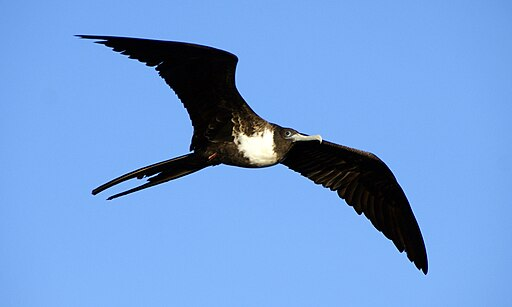

Eco-Friendly Travel Tips
- Pack Reusable Bags Use containers and utensilsto avoid using single use of plastics. (NZ Water bottles)
- Support Local Farmers Support local farmers by eating in their restaurant that serve locally sourced and seasonal food. (Kiribati Farmers)
- Support Bontique Hotels Support bontique hotels are often smaller and more sustainable than large chain hotles.
- Use Public Transportation Use public transportation like cycle or walk whenever possible.
